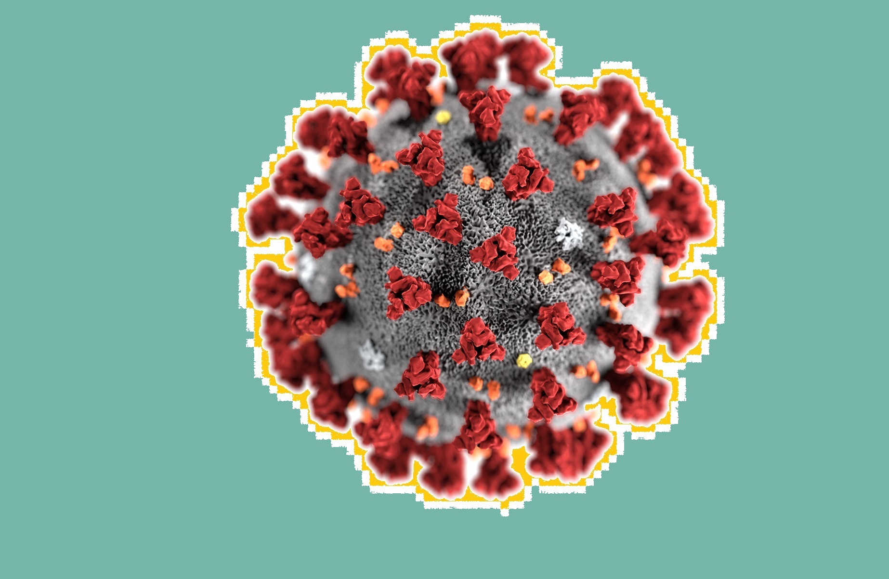

COVID related resource collection
Home
News
Papers
Analysis tools
Covid app source code
GitHub repository
Contact us: Swinburne Cybersecurity lab
1
News
CovidSafe News
News Title
Date
Apple and Google contact tracing technology could be integrated into COVIDSafe app
21 May 2020
States now tracking COVID-19 patients with COVIDSafe app – so should you be using it?
22 May 2020
Coronavirus: COVIDSafe app malfunction
21 May 2020
False positives, false negatives: it’s hard to say if the COVIDSafe app can overcome its shortcomings
18 May 2020
Australia’s COVIDSafe tracking app – How does it work, and is it safe?
26 April 2020
Users of COVIDSafe app urged to update to avoid blind spot
15 May 2020
Readers respond to the COVIDSafe app’s launch
8 May 2020
Experts raise concerns about security of coronavirus tracing app COVIDSafe
14 May 2020
Copyright © 2020 Julian Thilo, licensed under
CC-BY-3.0
.